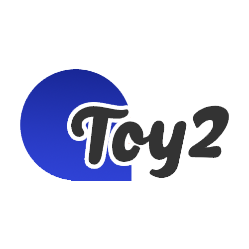

Master’s Thesis
LULC Classification using Machine Learning and Deep Learning algorithms with the aid of Google Earth Engine
The Compilers course required the development of a compiler, which had to be designed and programmed throughout the duration of the course. After explaining how a compiler works, the professor created a new programming language called Toy2. Once we were provided with the lexemes, grammar, and semantics that needed to be followed, we proceeded with the implementation of the compiler for this newly defined language.
The steps for developing a compiler
For the development process, we used IntelliJ as the IDE and GitLab for version control. The project began with the implementation of a lexical analyzer (Lexer), followed by the creation of a syntax analyzer (Parser). After these components were completed, we proceeded to develop various Visitors, such as the Scope Visitor and Type Visitor, to ensure that the semantic rules were correctly enforced. Finally, a Translator Visitor was implemented to convert the Toy2 executable file into a C executable file, allowing it to be compiled using a C compiler. The entire compiler was developed using Java.

Example of AST generated with DefaultMutableTree and JFrame